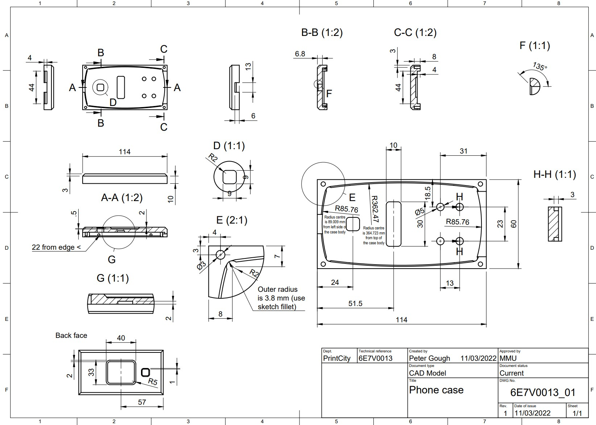
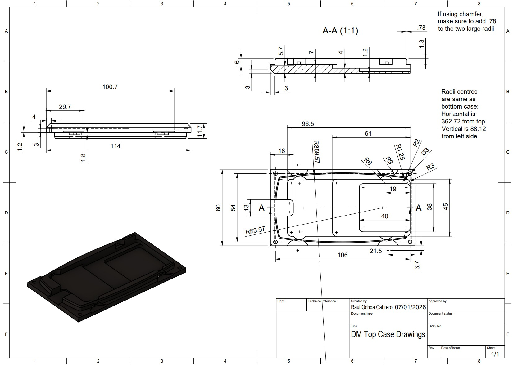

The Challenge
This semester I am taking on the role of a manufacturer of plastic casings specialising in additive manufacturing processes. The client, a fictional company called Phones-R-Us, wants to produce 50,000 modular mobile devices per year and has hired me to manufacture both the top and bottom casings using 3D printing.
The task is not just to print a casing. I need to prove the casing fits the existing master casing produced by another supplier, passes through the FESTO CP assembly line without fault, and that my manufacturing process can realistically scale to meet the annual demand.


What is Industry 4.0?
This module is framed around Industry 4.0 — the fourth industrial revolution driven by digitalisation, automation, and data exchange in manufacturing. Industry 4.0 represents the convergence of physical manufacturing and digital technology, integrating cyber-physical systems, the Internet of Things (IoT), cloud computing, and artificial intelligence into the production environment. Schwab (2016) defines this fourth industrial revolution as distinct from all previous ones, not simply because of the technologies involved, but because of the unprecedented speed, scale, and systemic impact of the transformation. Unlike the steam-powered first revolution or the electronics-driven third, Industry 4.0 is defined by connectivity; machines communicate with each other, processes are monitored in real time, and decisions can be made autonomously without human intervention. Lasi et al. (2014) further identify two core drivers of Industry 4.0: application pull, driven by the demand for increasingly customised products, and technology push, driven by the rapid development of smart manufacturing tools. Both are directly relevant to this project. Phones-R-Us requires a flexible manufacturing approach capable of producing modular phone casings, while the tools available, including 3D printing and plant simulation software, represent exactly the kind of enabling technologies Lasi et al. describe.
In this project, vertical integration (Hermann et al., 2016) is demonstrated through the Tecnomatix plant simulation, connecting the 3D printing process, the FESTO assembly line stations, and the output counter into one unified digital model. Horizontal integration is relevant when considering the multi-supplier challenge: my 3D printed casing had to be compatible with casings produced by other students to the same drawing, reflecting the real-world difficulty of coordinating suppliers digitally along a shared supply chain. Brettel et al. (2014) argue that horizontal integration across supplier networks is one of the most significant challenges manufacturers face in implementing Industry 4.0, as achieving true digital connectivity between independent suppliers requires standardisation of both data formats and manufacturing processes; something this project demonstrated in practice through the variability observed between casings from different suppliers.
My Plan for the Semester
Over the course of this module I took on the role of a plastic casing manufacturer supplying Phones-R-Us. My work was structured around four key activities. First, I selected and used a 3D printer to manufacture both the top and bottom phone casings, experimenting with print settings to achieve the best dimensional accuracy within the 2-hour print cycle. Second, I carried out dimensional inspection of my printed casings using measuring equipment in the lab, comparing my results against the GA drawing to assess whether my parts were within tolerance. Third, I observed and timed each of the six stations on the FESTO CP assembly line, recording cycle times and testing my casing on the real line. Finally, I built a virtual model of the entire production process in Tecnomatix Plant Simulation, optimising the number of 3D printers required to meet the 50,000 phones per year target, ultimately achieving an output of 52,220 phones per year with 70 printers running in parallel.
Why This Matters
Digital manufacturing matters because it fundamentally changes how decisions are made. Traditionally, discovering that a production line cannot meet a volume target would require building the line, running it, and measuring the shortfall, at considerable cost. Tao et al. (2018) describe this shift as the rise of the digital twin: a virtual replica of a physical system that enables real-time monitoring, simulation, and optimisation without disrupting real-world production. In my case, the simulation revealed that the 3D printing stage, not the assembly line, was the true production bottleneck, and that 67 printers running in parallel would be needed to hit the annual target of 50,000 phones. That insight, derived entirely from a digital model, would have been far more costly to discover through physical trial and error. This reflects what Tao et al. (2018) identify as the primary value of digital twin technology: the ability to explore and solve manufacturing problems in a virtual environment before committing resources in the physical one.
1. Brettel, M., Friederichsen, N., Keller, M. and Rosenberg, M. (2014) 'How Virtualisation, Decentralisation and Network Building Change the Manufacturing Landscape', International Journal of Mechanical, Industrial Science and Engineering, 8(1), pp. 37–44.
2. Hermann, M., Pentek, T. and Otto, B. (2016) 'Design Principles for Industrie 4.0 Scenarios', 49th Hawaii International Conference on System Sciences, pp. 3928–3937.
3. Lasi, H., Fettke, P., Kemper, H., Feld, T. and Hoffmann, M. (2014) 'Industry 4.0', Business & Information Systems Engineering, 6(4), pp. 239–242.
4. Rüßmann, M., Lorenz, M., Gerbert, P., Waldner, M., Justus, J., Engel, P. and Harnisch, M. (2015) Industry 4.0: The Future of Productivity and Growth in Manufacturing Industries. Boston Consulting Group.
5. Schwab, K. (2016) The Fourth Industrial Revolution. Geneva: World Economic Forum.
6. Tao, F., Zhang, H., Liu, A. and Nee, A.Y.C. (2018) 'Digital Twin in Industry: State-of-the-Art', IEEE Transactions on Industrial Informatics, 15(4), pp. 2405–2415.